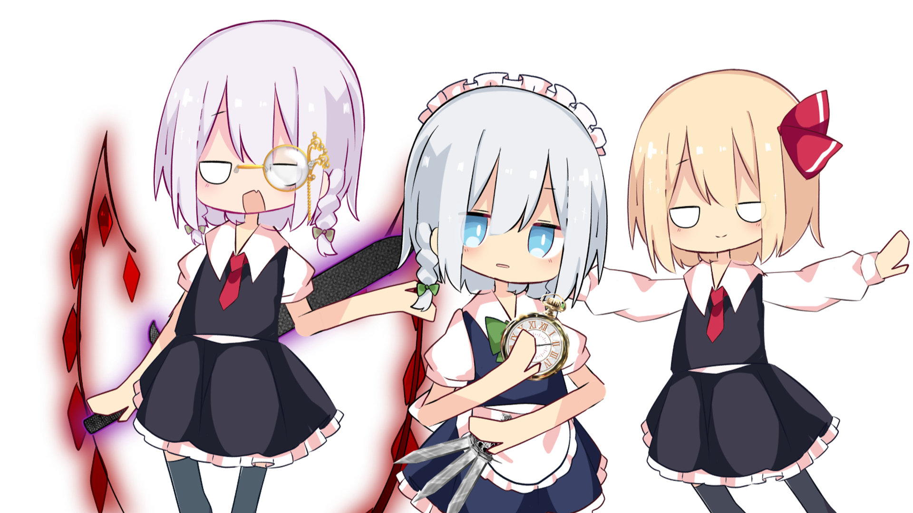
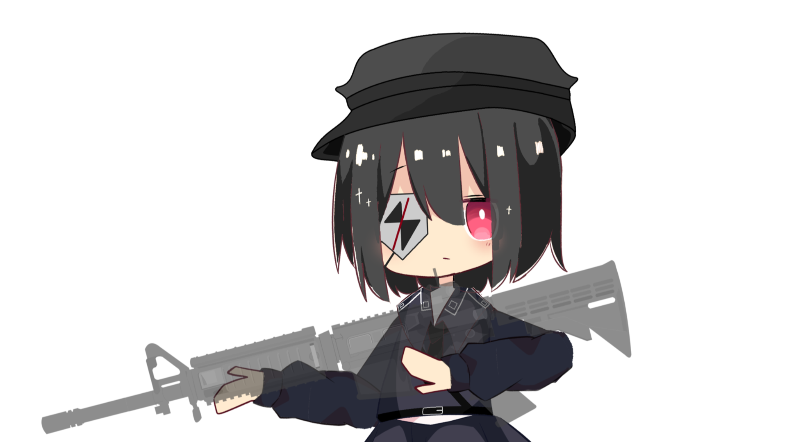

最近、オリキャラの存在にまたありがたみを感じてます。傍から見れば、性癖を盛り込んだだけのなろう系キャラなものが多い当チャンネルのオリキャラ共ですが、気づけば良くも悪くもチャンネルになくてはならない存在に。

僕の投稿を見てる皆様はご存知の通り、僕のチャンネルのオリキャラはオリキャラと言っても、そる式立ち絵を無理矢理改変して作ったキャラ。どちらかというと色変え界隈に近いですね。なので明確にオリキャラとは言いづらく、キャラを取り巻く立ち絵等の著作権もキャラ設定を除き、殆ど元立ち絵の作者のそる様に帰属するものとしています。 改変元の例を挙げると、朱音ライの頭は咲夜の髪が少し紫っぽくなったものにフリー素材のモノクル、服はルーミアの服の袖が半袖になったもの。空愛レンの頭はチルノの青髪にルーミアのリボン、服は古明地姉妹の服のピンク版。結構単純な組み合わせで、それでいて確かな個性を生み出すというのは、結構でした。

でも流石にそる式の色変えのみではネタが足りないのは馬鹿な僕でも重々承知。そのためしっかりオリキャラらしく、手書きで素材を作成することも。鍵原リンと浅海スイの被ってる軍帽が例です。しかし、画力が凡人以下の自分が素材を作成するのは色々とハードなのも事実、当時は何度か腕と脳とその他諸々が爆発し炭と化していました() そもそもオリキャラにそんな沢山バリエーションを持たせる必要もなかっtゲフンゲフン…
オリキャラなんて、傍から見れば性癖を詰め込みまくった痛いなろう系小説みたいな存在なのですが、こういった思慮模索や試行錯誤を経験した作者の身となると、やはりどこか引き込まれるような気持ちになります。自分の代理の姿にするもよし、空想の友人の実体版にするもよし、割となんでもありなオリキャラ。 それは、チャンネルの在り方そのものに直結するほどの、絶大な存在感を感じさせてくれると思います。